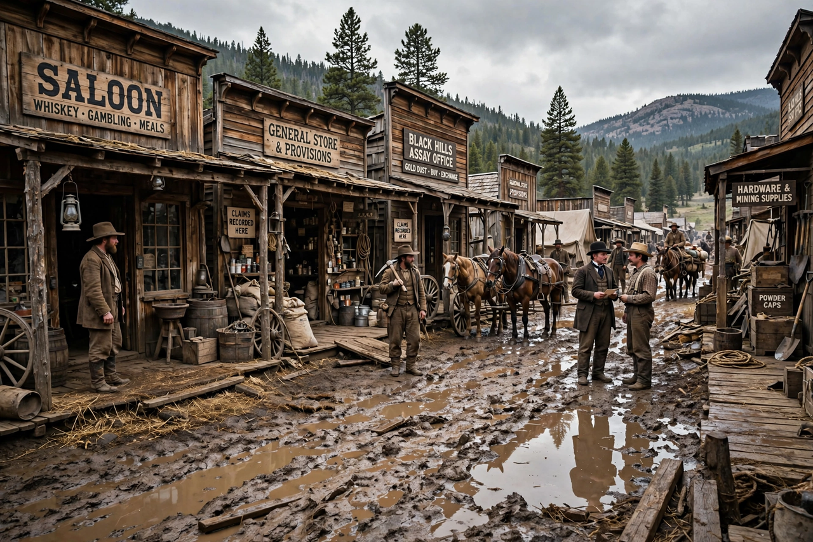

| Deadwood | |
|---|---|
 | |
| Genre | Western drama |
| Created by | David Milch |
| Starring | Timothy Olyphant, Ian McShane, Molly Parker, Powers Boothe, Brad Dourif, Paula Malcomson |
| Country of origin | United States |
| No. of seasons | 3 |
| No. of episodes | 36 |
| Original network | HBO |
| Original release | March 21, 2004 – August 27, 2006 |
Deadwood is an American Western television series created, produced, and largely written by David Milch. It aired on HBO from March 21, 2004, to August 27, 2006, spanning three seasons and 36 episodes. The series is set in the 1870s in Deadwood, South Dakota, before and after the area's annexation by the Dakota Territory, and charts the camp's growth from lawless gold-rush settlement toward organized community.
The show draws on historical figures including Wild Bill Hickok, Calamity Jane, Seth Bullock (Timothy Olyphant), and saloon owner Al Swearengen (Ian McShane), whose Gem Theater anchors the camp's economy and politics. Other central figures include the widow Alma Garret (Molly Parker), brothel madam Joanie Stubbs, the foul-mouthed but warm-hearted Jane (Robin Weigert), and the physician Doc Cochran (Brad Dourif). Later seasons introduce mining magnate George Hearst as an antagonist representing the arrival of corporate capital.
Deadwood is renowned for its dense, quasi-Shakespearean dialogue — iambic, profane, and highly stylized — which Milch described as an attempt to give the characters a heightened form of speech befitting people constructing a society from nothing. Its profanity, anachronistic by design, was intended to convey the roughness of a camp outside the law rather than reproduce 1870s speech literally.
HBO declined to renew the series for a fourth season in 2006, a decision widely lamented by critics. After years of negotiation, Deadwood: The Movie premiered on HBO on May 31, 2019, reuniting most of the cast and concluding the story a decade on. The series won eight Primetime Emmy Awards and a Golden Globe for McShane, and is regularly ranked among the finest television dramas ever made.